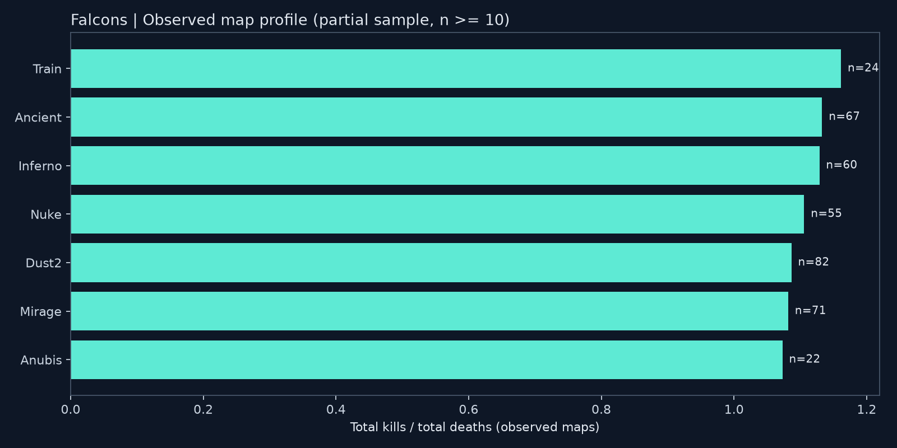
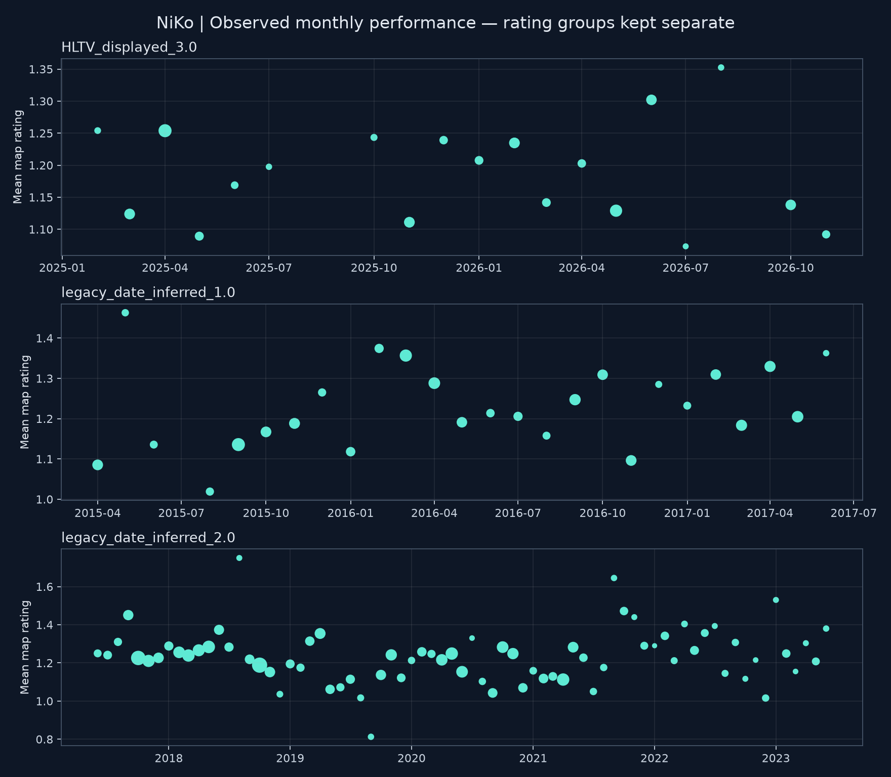

快照核验日期：2026-11-10。统计单位为地图，非 BO3/BO5 系列赛。
1. 同来源 CS2 样本：G2 的总 K/D 为 1.148、平均 ADR 为 82.4（195 张）；Falcons 为 1.106 和 79.6（347 张）。两个样本属于不同时间、对手和赛制构成，不能据此断言转会导致表现变化。
2. 地图表现：在至少 20 张 Falcons 观察地图的组中，Train 的总 K/D 最高，为 1.161（n=24）。这是描述性排序，样本量不平衡，不能解释为地图间显著差异。
3. 赢图与输图：下表展示 Falcons 样本内的同场表现关联。Rating 仅计算有记录的子样本，不用同场信息包装赛前预测。
共 2,030 张已接受地图，日期为 2015-04-17 至 2026-11-04；Falcons 381 张，G2 CS2 195 张。研究生涯阶段、地图、稳定性及胜负关联。
v1 是固定、部分覆盖的可复现研究快照。排名、赛事阶段、角色和武器数据不足，留作后续版本；不生成这些维度的结论。
| 战队 | 日期范围 | 地图 | 总 K/D | 平均 ADR | ADR 有效样本 |
|---|---|---|---|---|---|
| Falcons | 2025-01-15 — 2026-11-04 | 347 | 1.106 | 79.6 | 347 |
| G2 | 2023-11-30 — 2024-12-14 | 195 | 1.148 | 82.4 | 195 |
此表只使用 ektarr v10 的已接受地图，避免将缺失 ADR 的网页样本混入同来源对比。提供商未提供 Rating，G2 CS2 Rating 保持缺失。
| 地图 | 地图数 | 总 K/D | 平均 ADR | ADR 有效样本 | 胜率 |
|---|---|---|---|---|---|
| Train | 24 | 1.161 | 84.3 | 21 | 50.0% |
| Ancient | 67 | 1.133 | 79.6 | 59 | 67.2% |
| Inferno | 60 | 1.129 | 80.4 | 58 | 48.3% |
| Nuke | 55 | 1.106 | 80.8 | 50 | 61.8% |
| Dust2 | 82 | 1.087 | 78.6 | 76 | 59.8% |
| Mirage | 71 | 1.082 | 79.1 | 65 | 60.6% |
| Anubis | 22 | 1.073 | 75.3 | 18 | 63.6% |

| 地图结果 | 地图数 | 总 K/D | 平均 Rating | Rating 有效样本 | Rating 标准差 |
|---|---|---|---|---|---|
| loss | 155 | 0.846 | 0.976 | 111 | 0.307 |
| win | 226 | 1.347 | 1.333 | 154 | 0.386 |
标准差描述观察值的离散程度，不是跨时代的稳定性排名。Rating 的缺失机制可能影响子样本表现，不能假设有 Rating 的地图代表所有地图。
| 战队 | 游戏 | Rating 组 | 地图 | Rating 有效样本 | 平均 Rating | 总 K/D |
|---|---|---|---|---|---|---|
| FaZe | CSGO | legacy_date_inferred_1.0 | 75 | 75 | 1.245 | 1.219 |
| FaZe | CSGO | legacy_date_inferred_2.0 | 724 | 724 | 1.226 | 1.205 |
| Falcons | CS2 | HLTV_displayed_3.0 | 265 | 265 | 1.184 | 1.083 |
| Falcons | CS2 | no_rating_provided | 116 | 0 | 未提供 | 1.165 |
| G2 | CS2 | no_rating_provided | 195 | 0 | 未提供 | 1.148 |
| G2 | CSGO | legacy_date_inferred_2.0 | 283 | 283 | 1.229 | 1.176 |
| mousesports | CSGO | legacy_date_inferred_1.0 | 372 | 372 | 1.217 | 1.171 |

月度图按 Rating 口径分面，点大小表示有效 Rating 样本数；不连接缺失月份。旧版本标签由历史代码按日期推断，尚不能视为逐条核验的官方方法版本。CS:GO 与 CS2 的回合规则不同，跨游戏对比也需谨慎。
- 旧历史来源已通过三个原始 CSV 的 SHA-256 与重新下载的原始档案比对确认。
- 提供商 ID 26 通过全名和国家识别为 Nikola Kovač，排除了 ID 153 的另一位 niko；不混用提供商 ID 和 HLTV ID。
- 231 张地图在日期、队伍、对手、地图、K/D 和比分上匹配后补充网页 Rating。
- 1 个同日地图指标冲突隔离；10 条日期歧义的旧网页观察移出分析，不重复计算，不猜测日期。
- 所有决策见 合并审计，各月样本量见 覆盖日历。零表示没有载入观察值，不表示选手没有比赛。
- K/D = 有完整击杀和死亡记录的总击杀 / 总死亡；不是地图 K/D 的平均。总死亡为零时缺失。
- Rating 和 ADR 为地图等权均值，各自排除缺失值并报告有效样本数；不是按回合加权的官方汇总。多种非缺失 Rating 口径混合时不计算均值。
- 胜率仅对 win/loss 计算。看板和 CSV 给出 95% Wilson 区间作为描述参考；同系列地图相关，不能将其视为严格独立样本推断。
- 2021–2023 补充层较稀疏，2023 年过渡期以及其他来源遗漏尚未补齐。日期跨度不等于完整覆盖。
- 缺少对照选手、角色和历史排名，不能从本研究推断长期顶尖或转会影响的因果原因。
python -m tools.build_portfolio 离线重建本报告、CSV、图表、SQLite 与看板。输入是 data/processed/niko_maps.csv，输入哈希见 快照清单。
来源详情见 来源审计；许可与署名见 DATA_LICENSES。未持续监控或定时采集。